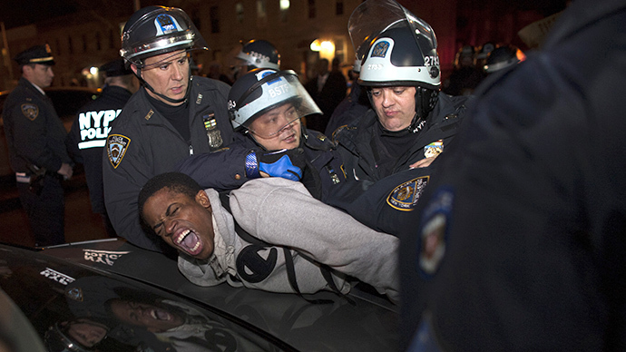

Hello ,my name is Sarah Wilkerson and I am 14 years old.I am a 9th grader at Edward R. Murrow.
I'm one of the web developers of this website. My teammates and I picked police brutality for our website because its
important to know the cause and that how people are getting killed because of this. We hope you enjoy the information
that we're giving you on this website and hopefully, you can help make a change with us. Thank you very much, Sincerely, Sarah Wilkerson
